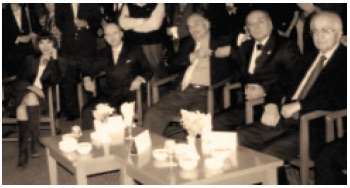

Beyoğlu
“Siyasetten uzak dur! Siyasetçiye yakın dur!”
Baybars Altuntaş
8
Beyoğlu’nda gezersin...
Gözlerini süzersin...
Beyoğlu Güzelleştirme Derneği Başkanı oldum. Herkese “Siyasetten uzak dur! Siyasetçiye yakın dur!” diye öğüt veriyorum ya. İşte, siyasetten uzak durayım, siyasetçiye de yakın durayım derken... İşleri nasıl yüzüme gözüme bulaştırdım Beyoğlu’nda. Anlatmadan edemeyeceğim.
Nevzat Ayaz’la kendisi Milli Eğitim Bakanı iken tanışmıştık. Benim için çok değerli bir insan ve gerçek bir devlet adamıdır. Bir gün Nevzat Ayaz’ın yardımcısı, Bakan’ın, Vakko’ların kurucusu Vitali Hakko ile ziyaretime gelmek istediğini belirtti. “Hayırdır inşallah” dedim kendi kendime.
Geldiler, çaylarımızı içtik, Beyoğlu’ndan konuştuk, laf döndü dolaştı Beyoğlu Güzelleştirme Derneği’ne geldi. Vitali Hakko’nun kurduğu bu dernek, tüm Türkiye’nin en önde gelen isimlerini şemsiyesi altında toplamıştı ve özellikle Vitali Hakko’nun Çiçek Pasajı geceleriyle sosyetenin de göz bebeği olmuştu. Türkan Şoray’dan Erdoğan Demirören’e, Gülriz Sururi’den Ediz Hun’a kadar iş ve sanat dünyasının tüm önde gelenleri derneğin üyesiydi. Nevzat Ayaz da, Bay Vitali’nin ısrarıyla bir dönem başkanlığını yapmıştı derneğin.
“Baybars Bey, derneğin genel kurulu yaklaşıyor. Düşündük taşındık, sizi başkan olarak genel kurulda aday göstereceğiz ve siz de bu görevi layıkıyla yapacaksınız. Şimdiden yönetim kurulu listenizi hazırlayın.”
Biri Türkiye Cumhuriyeti’nin Milli Eğitim Bakanlığı’nı yapmış çok değerli bir devlet adamı, diğeri Türkiye’nin sayılı iş adamlarından biri... Bana fikrimi bile sormadılar; bir emri vaki ile karşı karşıyaydım ve bırakın hayır demeyi, düşüneyim demek bile kendilerine hakaret olarak sayılabilirdi.
Beyoğlu Güzelleştirme Derneği’nde Vitali Hakko, Çetin Yıldırımakın ve Nevzat Ayaz’dan sonra başkanlık yapmak da herkesin harcı değildi. Bir yandan bunu düşünürken, bir yandan da dernek tarihinde ilk kez 34 yaşında genç bir insan başkanlık yapacaktı. Önemliydi.
Bir ay sonra Beyoğlu Güzelleştirme Derneği Başkanı olarak Genel Kurul’da teşekkür konuşması yapıyordum katılımcılara.
Misbah Demircan’la Kadir Topbaş’ın Arasında Kaldım
Kısa zamanda derneğe yeni bir soluk getirmeyi başardım. Beyoğlu’nu Girişim Vadisi ilan ettim, Bakan Binali Yıldırım’dan ödül aldım. Londra’ya gittim, Oxford Street Başkanı ile İstiklal Caddesi’ni kardeş caddeler ilan ettik. AC Nielsen ile Beyoğlu’nda Tutum ve Beklentiler Index’ini çıkardık. TBMM Sokakta Yaşayan Çocukların Sorunlarını Araştırma Komisyonu üyelerini derneğe getirdim. Bizim verdiğimiz önerge Meclis’te tutanaklara geçti. Bu arada üyelerimiz için Burhan Doğançay Müzesi’nde, Pera Müzesi’nde resepsiyonlar düzenliyor, pek çok sergi organize ediyorduk. Yaptığım her şeyi basında da iyi duyurmaktan geri kalmıyordum.
Yakın zaman önce yerel seçimler de yapılmış ve Ahmet Misbah Demircan Beyoğlu Belediye Başkanı, Kadir Topbaş da Büyükşehir Belediye Başkanı olmuşlardı.
Misbah Demircan, yeni başkan olmasından kaynaklanan ufak tefek sorunlar bir yana, turizmci geçmişi ve genel havasıyla bu iş için biçilmiş kaftandı. Kısa zamanda konuya hâkim oldu, Beyoğlu’nda hızla iyi bir şeyler yapma konusunda motivasyonu yüksekti. Becerikliydi de. Beyoğlu Belediye Başkanlığı’na da gayet yakışmıştı.
Demircan’la aramızdan su sızmıyor. Her gün ya o bende ya da ben ondayım. Yaşı yaşımıza, başı başımıza uygun, gayet iyi geçiniyoruz.
Kadir Topbaş da Beyoğlu’nun duayenlerinden ve sanırım abisi Ahmet Topbaş da Beyoğlu Güzelleştirme Derneği’nin kurucularından.
Bir gün Ahmet Misbah Demircan, bir gazeteciyle sohbet ederken – röportaj bittikten sonra – gazeteciye söylediği şeyleri yanlış anlayan gazeteci bunları da röportaja ekleyince, Kadir Topbaş’la arası açıldı. Biraz da yeni başkan olmanın acemiliğinin kurbanı olmuştu Ahmet Misbah Demircan, olan bitenden çok üzgündü.
* * *
Telefonum çaldı, İstiklal Caddesi esnafından bir arkadaş telefonda. Yazı toplamışlar, İstiklal Caddesi’ndeki taş döşeme işinden dolayı yürüyüş yapıp olayı protesto edeceklermiş. İstiklal Caddesi’nin taşları yenilenirken yağmurlar başlamış ve etraf doğal olarak çamur olmuştu. Bu da esnafın işlerini etkiliyordu.
İstiklal Caddesi’ndeki çalışmayı Büyükşehir Belediyesi yürütüyordu. Demircan’la Topbaş’ın arasının da limoni olduğunu bildiğim için, Kadir Topbaş’ı cebinden aradım:
“Bunlar kepenk kapatıp, yürüyüş yapacaklarmış. İsterseniz bir toplantı yapalım, sizi karşılarında görürlerse yumuşarlar.”
“Baybars, sen yarın Lütfi Kırdar’a gel, görüşelim sabahtan.”
Saat 10’da Başkan Topbaş, yanında Genel Sekreter Mesut Bey ve Vali Bey’le beraberdik. Tahmin ettiğim gibi toplantıya Beyoğlu Belediye Başkanı’nı çağırmamıştı Kadir Topbaş.
Ofise geçince, esnaf yatışsın diye hemen sabah yaptığımız toplantı hakkında bir mektup yazdım, fotokopiyle çoğaltıp İstiklal Caddesi’ndeki tüm dükkânlara gönderdim. Mektubu yazmamdaki amaç, “Dernek oturmuyor, sizin için çalışıyor. Biraz sabredin. Başkan Topbaş söz verdi, bu iş hallolacak” demekti. Ayrıca, yeni dernek başkanı olarak esnafın takdirini de toplamaktı amacım. Doğrusu, biraz havam olsun istedim.
Al sana hava! Yahu, sana ne esnafın takdirini toplamaktan, sen Kadir Topbaş’ın takdirini toplamaya bak! Gerçek bir acemilikten başka bir şey değildi yaptığım.
Ertesi sabah Beyoğlu Belediye Başkanı Ahmet Misbah Demircan telefondaydı, kızgındı:
“Baybars, yazdığın mektuplar çok güzel olmuş, tebrikler...”
Öğleden sonra da Kadir Topbaş’la telefon görüşmesi aynı şekilde bitti, o da kızgındı:
“Bu mektup işi de nereden çıktı? 30 yıllık siyasetçiyim, böyle rezillik görmedim.”
İkisi de çok iyi insanlardı. Kadir Bey’in kızı Kübra bizim kursiyerimizdi. Eşimle de arası çok iyiydi. Ahmet Misbah Demircan’la her gün beraberdik.
Sonuç: Aramın iyi olduğu 2 önemli insanı kaybetmiştim. İlişkileri kurmak zordur, ancak yıkmak işte böyle acemiliklerle çok kolay olabiliyor. Beyoğlu Güzelleştirme Derneği Başkanı olarak en son aramın açılması gereken 2 kişiyle, aramı açmayı başarmıştım.
Genel kurul günü geldi.
Üyelerimiz Genel Kurul salonuna teker teker girmeye başladılar. Önceki genel kurullara göre muazzam bir kalabalık. En önde oturanlara dikkat ediyorum, hemen hepsi Kadir Topbaş’ın yakın çevresinden üyelerimiz.
Hesabı ödeme vaktinin geldiğini anlamam zor olmadı.
* * *

Soldan Sağa: Gülriz Sururi, Ben, Burhan Doğançay,
Çetin Yıldırımakın, Nevzat Ayaz
Derneğin bir resepsiyonunda
Beyoğlu Güzelleştirme Derneği Başkanlığı’nda çok enteresan deneyimler edindim. Bir gün derneğimizin üyesi olan Türkiye çapında önemli ve ünlü bir sanatçımız “Dikkatli olun” dedi. Ne demek istediğinin farkında bile değilim. Bir önceki haftaki resepsiyonda Gülriz Sururi ile uzunca sohbet etmişim. Bana, dernek başkanı olarak herkesle eşit mesafeyi korumam gerektiğini söylemişti. Sanırım kendisi ile az sohbet etmiş olsam gerek ki böyle bir tepki ortaya koydu. Bu uyarısından sonra derneğin resepsiyonlarına cebimde kronometre ile gitmeye başladım.
GÜLRİZ SURURİ (Tiyatrocu-Yazar): Beyoğlu Güzelleştirme Derneği Başkanlığı bir emrivaki olmuştur ama gerçekten iyi bir girişimci olduğunu kanıtlayacak çok güzel çalışmalar yaptı. Zekice düşünülmüş buluşları vardı. Bir de karşısındakini gayet iyi dinliyordu.
Ülkemizde bugün en iyi şey girişimcilik. Bu imkanları açan yeterince iş verenimiz olmadığı için onları bizim el üstünde tutmamız gerekiyor. Onların ülkemizin gelişmesine çok büyük katkı sağladığını biliyoruz. Bu yüzden Baybars Bey o günden beri hem dostum hem çok takdir ettiğim, fikirlerinden yararlandığım, bir konu etrafında çok geniş düşünen, insana güven veren değerli bir dostum. Şimdi de televizyonda izlediğim starım oldu.